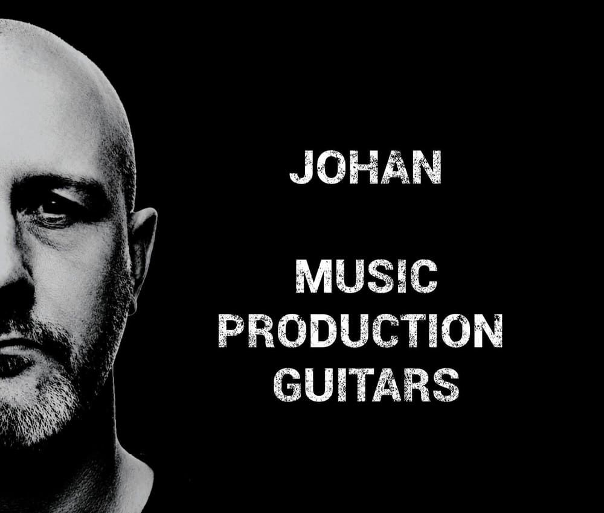

Videos play from YouTube and only load when you press play.
Notice board · Personnel
Drekmor is a Swedish synth-driven music project formed by Johan Brinkman, Linus Nyman and Tomas Vasseur.
Rooted in synthpop, darkwave and cinematic retro electronics, Drekmor moves between glowing neon melodies, shadowy atmospheres and human-made songs with a pulse. The sound draws from late-night synths, distorted memories, cracked signals and the feeling of standing somewhere between a lost transmission and a warning light in the dark.
Johan Brinkman and Linus Nyman have a long history of musical collaboration through projects such as Tiny Pilots, Urban Campfire, Love and Duct Tape and The Clockwork Project. Tomas Vasseur, also known from Ghost Nation, adds vocals and production to the project.

Spotify Apple Music YouTube Tidal Deezer Amazon Music Facebook
Press & booking: info@drekmor.com · Press release (PDF)
Music, lyrics, artwork and photos © Drekmor. Stockholm / Sweden. Fonts: Space Grotesk, Space Mono and Bebas Neue (SIL Open Font License).